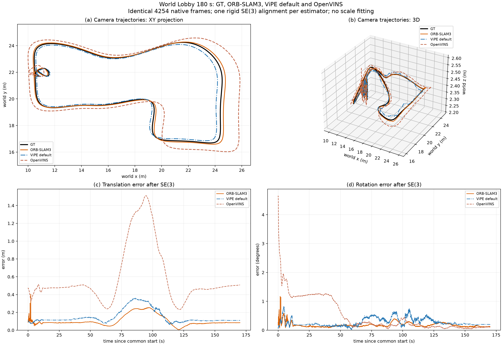
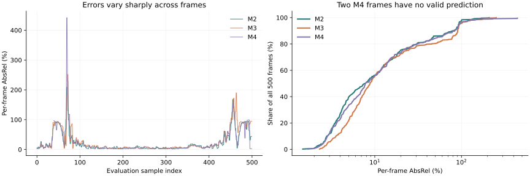

Do more accurate camera poses necessarily produce more accurate depth? This experiment says: there is another step to verify. Camera motion, metric depth and editable scene programs each need their own measurements.
ORB-SLAM3 · lowest trajectory ATE
ViPE + DA3 · 500-frame AbsRel
Modelling inputs / separate depth evaluation
What should a map be able to do?
A surface map describes where geometry lies. A scene program can also describe a table, its top and legs, and the space around it. Objects, relationships, materials and collision representations can support editing, rendering, queries and execution.
Our previous Astra × Blender experiment explored an agent writing Blender programs from visual and geometric observations. This new run revisits the foundations: Are the cameras accurate? Does depth retain metric scale? Are the observations reliable enough to support a scene program?
This article uses the new capture from 29 September 2026 and the depth results completed on 30 September. Trajectory evaluation, DA3 depth evaluation and modelling input audits are complete. The four Astra / Blender scenes remain in progress, with no complete frozen scene set or independent model scores in this snapshot. The previous article's models, TSDF results, appearance scores and robot success rates are not results of this run.
Start from the same observations
The new simulated lobby capture spans approximately 179.92 seconds, with 4,499 RGB images and 44,999 IMU samples, at 25 / 250 Hz. Images are 1280 × 960 with shared pinhole intrinsics fx = fy = 762.8, cx = 640, cy = 480. This is one synthetic scene and session; it does not establish real-world or cross-scene performance.
We compare GT, ORB-SLAM3, ViPE default and OpenVINS trajectories. The three estimators are scored at 4,254 exact common native timestamps, source frames 245–4498. Missing poses are neither interpolated nor extrapolated. Each estimated trajectory receives one global SE(3) alignment, with scale fixed to 1.
Four trajectories and four modelling routes are different sets
OpenVINS participates only in trajectory diagnostics. M1 is the RGB-only route. The historical M3, OpenVINS + MapAnything, is replaced by ORB-SLAM3 + DA3. Modelling depth for M2–M4 now uses the same DA3-GIANT model.
| Route | Observations provided to Astra | Scale and current status |
|---|---|---|
| M1 · RGB-only + Astra | Same 180 RGB frames, frame identity and shared intrinsics | No external poses or depth; assumed scale; inputs audited |
| M2 · ViPE + DA3 + Astra | 180 RGB, native ViPE poses and corresponding DA3 depth | Native metric scale; depth and input packet complete |
| M3 · ORB-SLAM3 + DA3 + Astra | 180 RGB, native ORB-SLAM3 poses and corresponding DA3 depth | Native metric scale; depth and input packet complete |
| M4 · GT pose + DA3 + Astra | 180 RGB, permitted GT camera poses and corresponding DA3 depth | GT cameras only, no GT depth or scene geometry; packet complete |
The 180 modelling frames are sampled uniformly from the common interval. Another 500 frames are selected deterministically from the remaining frames, with zero overlap. Inference windows are built separately. DA3 observes the RGB images of the 500 evaluation frames themselves. These results measure depth estimation on non-modelling frames, not novel-view rendering by a frozen Blender scene or generalization to a new scene.
Trajectory: ORB-SLAM3 leads, with scale still visible
TABLE 1 · Errors on the same 4,254 timestamps; coverage uses all 4,499 frames
| Estimator | Coverage / 4,499 | SE(3) ATE ↓ (m) | Rotation RMSE ↓ (°) | Sim(3) scale | Sim(3) ATE (m) |
|---|---|---|---|---|---|
| ORB-SLAM3 | 94.55% | 0.1205 | 0.1943 | 0.977680 | 0.0259 |
| ViPE default | 100.00% | 0.1668 | 0.3065 | 1.032927 | 0.0283 |
| OpenVINS | 98.73% | 0.6721 | 0.7699 | 0.885078 | 0.0580 |
ORB-SLAM3 has the lowest primary ATE RMSE at 0.1205 m, compared with 0.1668 m for ViPE and 0.6721 m for OpenVINS. Coverage answers a separate question: ORB-SLAM3 misses the first 245 frames, while ViPE covers the full sequence. Accuracy is compared on the common timestamps; coverage preserves full-session completeness.

Inspect another projection
Display samples every eighth frame and retains the final frame. Shared coordinates and equal axis scales; all 4,254 frames remain in the evaluation.
SE(3) changes rotation and translation, but not scale. Sim(3) additionally allows a uniform scale. Under that diagnostic, ATE drops to 0.0259 / 0.0283 / 0.0580 m, respectively. A global scale component therefore explains a substantial part of the position error, but GT-fitted Sim(3) is not native metric accuracy. OpenVINS has the largest scale departure here, at 0.885078.
The capture, trajectories and sampling protocol differ from the previous experiment. Historical OpenVINS failure values do not describe this run, and differences across sessions cannot isolate the causal effect of a single change.
Depth: better poses do not automatically win
All three depth routes use DA3-GIANT, four-view windows, two-frame overlap and processing resolution 392, with align_to_input_ext_scale=True. M2 / M3 receive their native trajectories without GT alignment; M4 receives GT camera poses. Overlapping predictions are selected by maximum window centrality, breaking ties in favour of the earlier window.
Blender BVH ray casting against the GT scene provides camera optical-Z, the depth along the camera's forward axis, rather than Euclidean distance along a ray. Every frame uses a fixed 160 × 120 grid, or 19,200 rays. Predictions are mapped through their processed intrinsics and bilinearly sampled at the corresponding original-image rays.
Switch the split and metric
Primary results use no GT scale fitting.
TABLE 2 · Native DA3 depth on 180 modelling frames; no GT scale fitting
| Method | MAE ↓ (m) | RMSE ↓ (m) | AbsRel ↓ | δ1 ↑ | Coverage ↑ | Penalized MAE ↓ (m) |
|---|---|---|---|---|---|---|
| M2 | 1.2576 | 2.7339 | 19.06% | 82.89% | 99.56% | 1.3850 |
| M3 | 1.3701 | 2.7905 | 20.38% | 80.02% | 99.74% | 1.4432 |
| M4 | 1.2520 | 2.8187 | 18.87% | 84.36% | 98.11% | 1.7958 |
TABLE 3 · Native DA3 depth on 500 non-modelling frames; no GT scale fitting
| Method | MAE ↓ (m) | RMSE ↓ (m) | AbsRel ↓ | δ1 ↑ | Coverage ↑ | Penalized MAE ↓ (m) |
|---|---|---|---|---|---|---|
| M2 | 1.4596 | 2.8562 | 21.62% | 75.05% | 99.59% | 1.5762 |
| M3 | 1.7093 | 3.2678 | 25.82% | 73.75% | 99.30% | 1.9066 |
| M4 | 1.4741 | 2.9699 | 21.95% | 76.65% | 98.19% | 1.9895 |
On 500 frames, RMSE / AbsRel are 2.8562 m / 21.62% for M2, 3.2678 m / 25.82% for M3, and 2.9699 m / 21.95% for M4. M4 has the highest δ1 but the lowest coverage; M2 has the lowest penalized MAE. A ranking needs its metric and validity domain. M1 has no native depth, so it is absent from these tables.
Read coverage with error
The fixed GT domain includes finite optical-Z in [0.1, 30] m. The implementation also requires predictions to be finite, inside [0.1, 30] m and supported by valid sampling; predictions outside this range count as missing. MAE, RMSE, AbsRel and δ scores use the jointly valid intersection. Coverage retains the full GT denominator: 3,456,000 / 9,600,000 positions for the 180 / 500 splits.
Penalized MAE uses the fixed GT domain: absolute error for valid predictions, 30 m for missing predictions. AbsRel is mean(|ẑ − z| / z); δ1 is the fraction with max(ẑ/z, z/ẑ) < 1.25. Tables pool all valid pixels; pooled RMSE is not the mean of per-frame RMSEs. Coverage measures available output, not correct geometry.

The reports include paired frame bootstrap diagnostics: 2,000 repeats, seed 20260930. For 500-frame per-frame AbsRel, the mean M2−M3 difference is −4.58 percentage points, with a 95% interval [−6.28, −2.97]. M2−M4 uses 498 mutually comparable frames and gives −2.09 points, [−3.83, −0.72]. These average frame-level differences, unlike the pooled pixel scores in Table 3. Video frames are correlated; the intervals describe variation within this session, not independent experiment repetitions or cross-scene confidence.
Scale diagnostics: similar shape is not reliable metric depth
If each frame receives a GT-assisted median scale correction, 500-frame RMSE falls to approximately 0.54 m and AbsRel to approximately 3%. The three routes become very close in this diagnostic.
TABLE 4 · GT-assisted per-frame scale diagnostic on 500 frames; excluded from primary ranking
| Method | Native RMSE (m) | GT-scaled RMSE (m) | GT-scaled AbsRel | Scale P05–P95 | Coverage |
|---|---|---|---|---|---|
| M2 | 2.8562 | 0.5413 | 2.99% | 0.650 – 8.387 | 100.00% |
| M3 | 3.2678 | 0.5420 | 2.99% | 0.522 – 10.397 | 100.00% |
| M4 | 2.9699 | 0.5403 | 2.98% | 0.611 – 8.948 | 99.60% |
This is evidence consistent with unstable local scale, but the correction uses GT and the P05–P95 scale ranges are wide. The evaluator also reapplies the [0.1, 30] m prediction validity rule after scaling, changing coverage. The improvement combines scale correction and a changed valid intersection; it cannot attribute every error to one mechanism.
GT poses supply camera geometry, not true depth. Predicted shape, local baseline, scale alignment and validity filtering still affect the output. ViPE trajectory errors could partly compensate for depth scale bias, but this causal explanation has not been independently established; the results do not make estimated poses more correct than GT.
A concrete boundary case occurs in M4's final two nominal windows, whose camera centres are stationary. Windows 247 and 248 replace one view with anchor sample 276 from the same evaluation split, introducing approximately 14.54 m of baseline. The fallback reads no GT depth, but changes the view composition and must be disclosed. This event is distinct from the invalid predictions at samples 37 and 38.
Bring measurements into the scene program
The next question is whether an agent can turn imperfect observations into inspectable objects. The modelling contract calls for inspecting inputs, measuring and decomposing objects, writing bpy from an empty scene, rendering fixed input views, independent review, revision and freezing, followed by GT evaluation.
A named chair can be edited. Its position, dimensions, support and surrounding free space also need measurements before it can serve as a reliable task environment.
Four method-specific input packages have been prepared and audited: 680 RGB hashes and 540 modelling geometry files passed checks, and the 180 / 500 splits are disjoint. Isolation uses physical copies and method-specific contexts. The audit explicitly records that there is no operating-system-enforced read sandbox; access rules alone are not proof of complete isolation.
The shared budget allows at most five complete scene versions and 60 visual check renders, using fixed sample indices 0, 45, 90, 135 and 179. M2–M4 allow up to three full input-depth checks. Initial and final independent reviews are required, alongside scene, object, collider, camera, measurement and access records. These are contract limits, not completed output counts.
| Stage | Evidence at this publication snapshot |
|---|---|
| Frozen trajectories and common evaluation | Complete; 3 estimators, 4,254 common timestamps |
| DA3 depth and independent GT ray evaluation | Complete; 3 routes × (180 + 500) frames |
| Astra input package audit | Complete; 4 method-specific packages |
| M1–M4 semantic scenes, final review and freeze | In progress; no complete frozen scene set found |
| Model depth, appearance and downstream tasks | No completed results for this run |
Future evaluation will keep three quantities separate: native DA3 depth versus GT, frozen model depth versus GT, and model consistency with its own input depth. Matching DA3 is not proof of matching the true scene; naming objects is not a semantic correspondence score.
The planned M2 / M3 model evaluation permits one global rigid alignment at scale 1. M4 retains its GT camera coordinate relationship. M1 has no external metric scale; if its frozen cameras support registration, it will be reported separately as a “GT-camera-assisted Sim(3) shape diagnostic.” Future model evaluation on 500 frames will still be a same-scene test.
What does this run teach us?
Pose, depth, scenes and tasks form an engineering chain, but accuracy does not transfer automatically. ORB-SLAM3 leads the trajectory table without leading pose-conditioned depth. GT cameras do not bypass depth scale and missing-output problems.
Editability is a representation capability; reliability needs measurements at every stage. A scene program makes objects and revisions inspectable. The next experiment should preserve scale uncertainty, low-baseline windows and missing regions, then test whether modelling resolves those problems or covers them with plausible geometry.
This is evidence from one scene and one capture. It does not yet establish completed modelling, robot task success or reduced human effort for the new run. Those remain concrete questions for the next stage.
Evidence, versions and reproduction
Tables are generated from frozen JSON, and figures use this run's data. The previous blog supplies the research context and editorial reference. Selected original evidence is copied byte for byte with SHA256 hashes. The site does not bundle the full video, all depth arrays or unfinished models.
Trajectory per-frame CSV · Depth per-frame CSV · Evaluator · Depth validity and formulas · Modelling contract · Modelling plan · Build and publication instructions
Method references: ViPE · ORB-SLAM3 · OpenVINS · Depth Anything 3 · Blender Python API